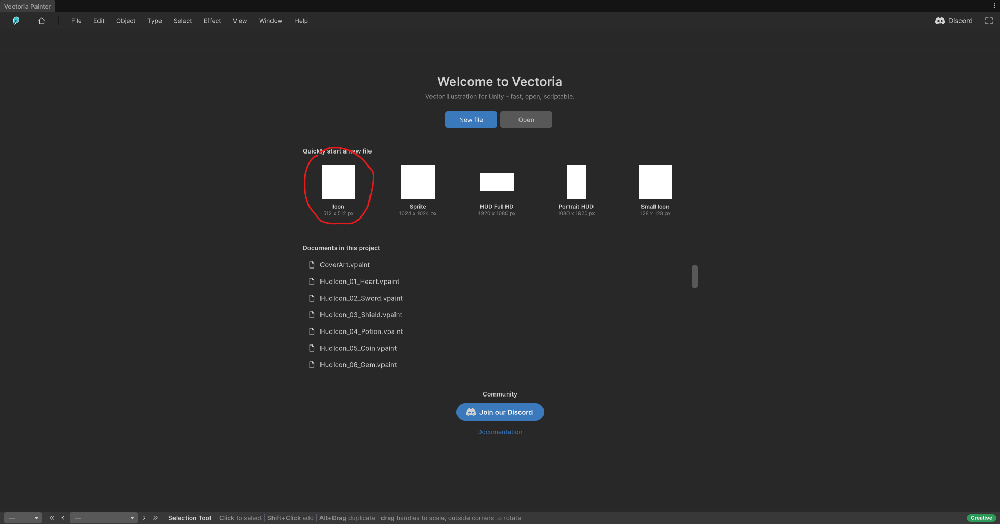
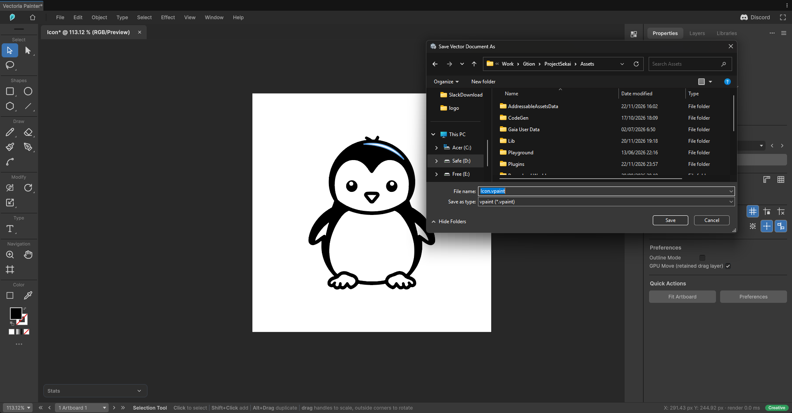
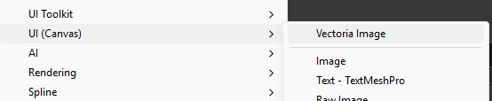
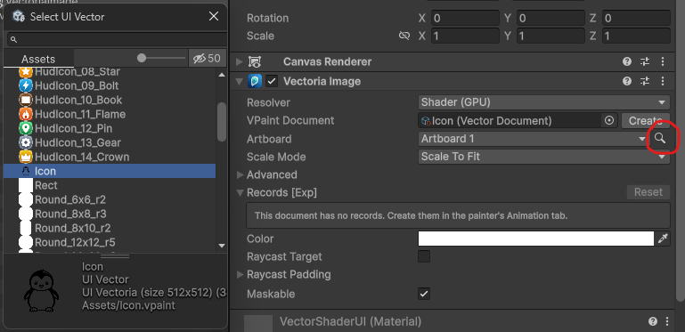
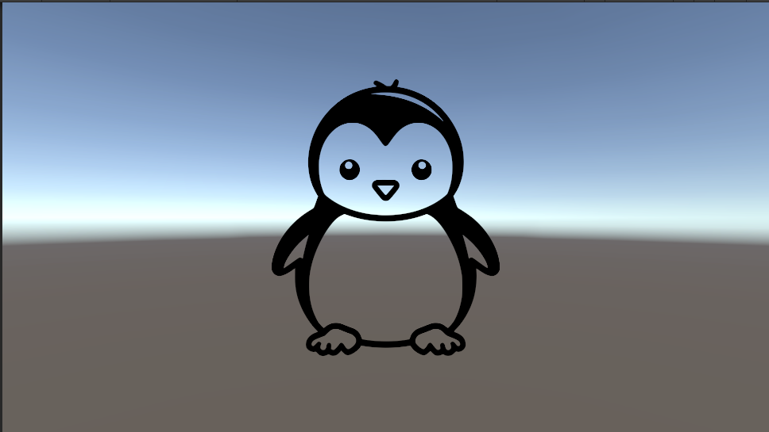
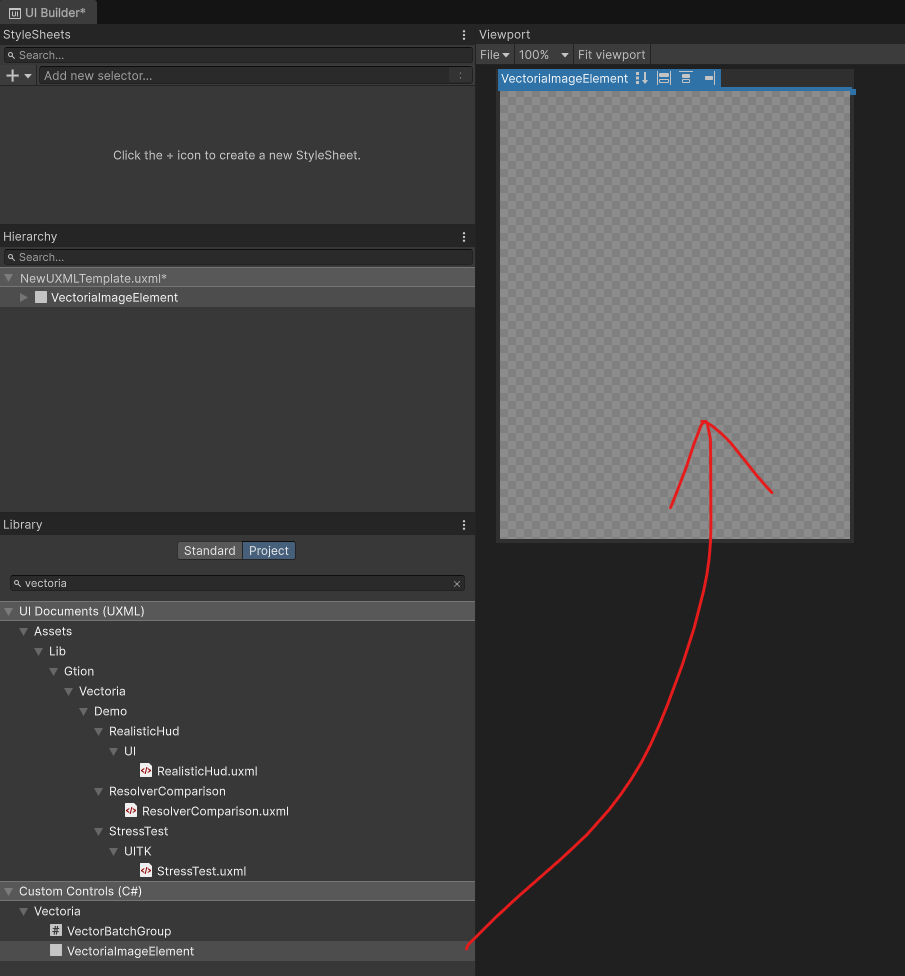
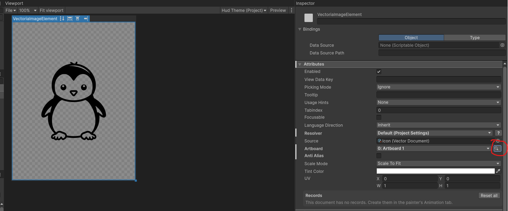

Quick Start
Draw an icon and show it on screen in a few minutes.
1. Draw and save
- Open
Tools › Vectoria › Open Vectoria Painter. - Under Quickly start a new file pick a preset, e.g. Icon (512 x 512 px), and draw.

- Save it as a
.vpaintinside your project’sAssetsfolder. Double-clicking it (orAssets › Open in Vectoria) reopens it later.
2. Show it
uGUI
Fastest way: drag the .vpaint from the Project window into the Hierarchy or the Scene view. Unity creates a Vectoria Image that already shows the first artboard, so you can skip the steps below. It goes under the item you drop on (or the selected one) when that is inside a Canvas, otherwise under the first Canvas in the scene. If there is no Canvas, one is created.
Or set it up by hand:
- Create it with
GameObject › UI (Canvas) › Vectoria Image(or add the UI/Gtion/Vectoria Image component).
- Click the search icon and pick the icon you just created.

- If the inspector warns about Canvas channels, press Fix (see Canvas setup).

UI Toolkit
- In UI Builder add a
VectoriaImageElement.
- Click the search icon and pick the icon you just created.

- See the result.